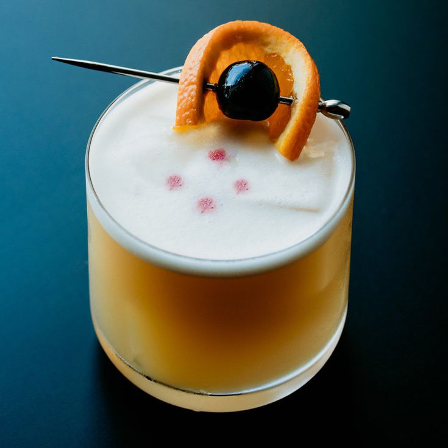

Whiskey Sour

A classic sour cocktail
Ingredients
- 2 ounces whiskey
- 3/4 ounce freshly squeexed lemon juice
- 1/2 to 3/4 ounce simple syrup, to taste
- Maraschino cherry (or lemon peel), garnish
Steps
- Gather the ingredients.
- In a cocktail shaker filled with ice, pour the whiskey, lemon juice, and simple syrup.
- Shake well.
- Strain into a chilled sour glass or over fresh ice in an old-fashioned glass.
- Garnish with a maraschino cherry or lemon peel. Enjoy